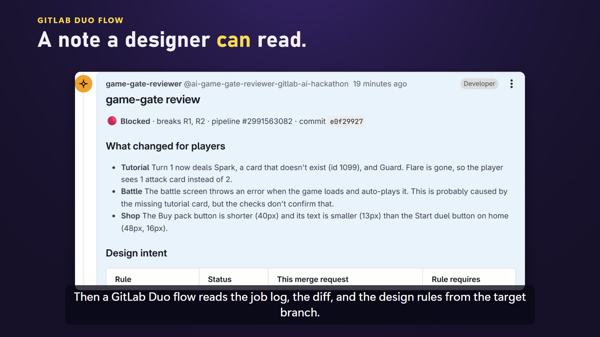
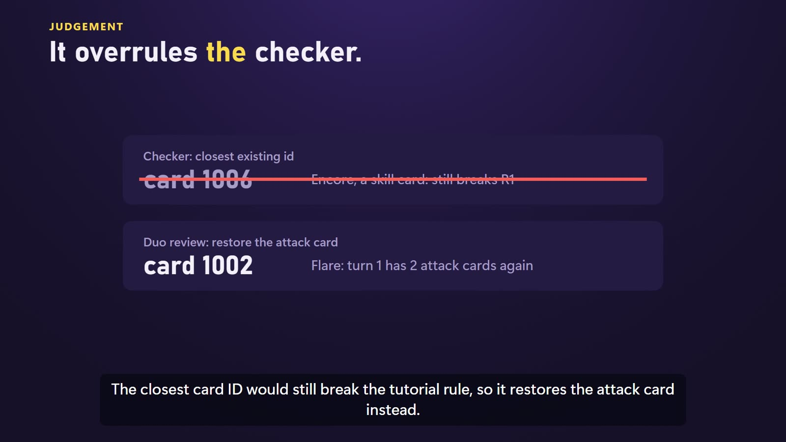
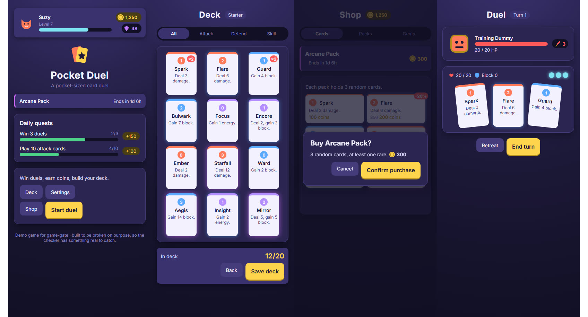

Solo · AI-assisted (Claude Code) · GitLab AI Hackathon 2026 · MIT独立 · AI 协助开发（Claude Code）· GitLab AI 黑客松 2026 · MIT 开源
game-gate
Node.js · Playwright · GitLab CI/CD · GitLab Duo Agent Platform
AI agents write game code in minutes, but checking it still takes hours: what changed for players, does it fit a small phone, do the data tables still line up, does it follow the design rules. game-gate is a pre-merge gate for web games. CI plays the game and screenshots every screen, a GitLab Duo agent explains the result in player terms, and nothing is fixed or merged without a person's approval. AI 几分钟就能写出游戏代码，核对却要几小时：玩家那边改了什么、小手机上放不放得下、数据表还对不对得上、是否符合设计规则。game-gate 是网页游戏的合并前把关工具：CI 自动试玩游戏、给每个界面截图，GitLab Duo 智能体用玩家视角写出评审结论，修复和合并都要人点头。
Problem问题
Web games rarely have tests, so a pipeline stays green while a tutorial crashes on a missing card id or a button shrinks by eight pixels.
网页游戏很少有测试，于是流水线一片绿，教程却因为一张不存在的卡牌 id 崩了，或者某个按钮矮了八个像素。
Decision决策
Let CI play and measure the game, let an agent judge the result against written design rules, and keep a person as the only one who can approve a fix.
让 CI 去玩和测量游戏，让智能体对照写明的设计规则判断结果，批准修复的只能是人。
Outcome结果
In the demo merge request it caught a crash, two layout regressions and a design-rule break, and the fix landed only after approval.
演示合并请求里，它抓到一个崩溃、两处布局回归和一条设计规则违规，修复在批准后才提交。
From merge request to approved fix从合并请求到批准的修复
Check检查
A CI component boots the game headless, plays it and screenshots each screen at 360, 412 and 1280 px, running only the checks the changed files can affect.
CI 组件无头启动游戏、自动试玩，在 360、412、1280 px 三种宽度下给每个界面截图，只跑改动文件可能影响到的检查。
Review评审
A GitLab Duo flow reads the report, the diff and the design rules, and posts one note: what changed for players, each rule's status and exact proposed fixes.
GitLab Duo 流程读取报告、diff 和设计规则，发一条评论：玩家能感受到的变化、每条规则的状态和具体修复建议。
Approve批准
The flow pauses. Only after a person approves does a fixer agent commit exactly those edits, to the merge-request branch only. It never merges.
流程暂停。人批准之后，修复智能体才提交且只提交批准的修改，只改合并请求分支，从不合并。
Checks cover boot and autoplay errors, labels clipped or off-screen on small phones, same-role buttons with different sizes, and data references to missing ids. After merge, the image deploys to Cloud Run and the gate smoke-checks the live build.检查项包括：启动与自动试玩报错、小屏上文字被裁或跑出屏幕、同类按钮尺寸不一致、数据引用了不存在的 id。合并后镜像部署到 Cloud Run，gate 再检查线上版本。

Judgement, not just detection不只发现问题，还要判断
In the demo, a tutorial dealt a card id that no longer existed. The checker proposed the closest existing id, 1006. The agent rejected it: 1006 is a skill card, so turn one would still break the rule that the tutorial deals two attack cards. It proposed restoring attack card 1002 instead. After approval, the fixer committed only the edits shown in the note, and the pipeline re-ran the checks.
演示中，教程发了一张已经不存在的卡牌 id。检查器建议换成最接近的 id 1006。智能体否决了：1006 是技能牌，换上去第一回合仍然违反「教程发两张攻击牌」的规则，所以它建议恢复攻击牌 1002。批准后，修复智能体只提交评论里列出的修改，流水线重新跑检查。

After the deadline: checking against the design赛后：对照设计稿检查
Pocket Duel, the small card game built for game-gate to check and break on purpose, now has ten screens and states, all built from design tokens with a matching Figma file. A new check compares each screen's elements with the design spec for size, font, colour and corner radius, then diffs the screen against the design image, aligned per element so one moved block doesn't fail the whole screen. Animations are frozen before measuring, and cropped card text is reported. Six named regressions, one per screen problem, each state the finding the gate must report. This work is on a local branch; the hackathon repository stays as submitted.
Pocket Duel 是专门给 game-gate 检查、也故意拿来弄坏的小卡牌游戏，现在扩到十个界面和状态，全部用设计变量搭建，并有对应的 Figma 设计稿。新增的检查把每个界面的元素和设计规格比尺寸、字体、颜色、圆角，再把整屏和设计图做像素比对；按元素对齐后再比，一个区块下移不会让整屏都报错。测量前先冻结动画，卡牌文字被截断也会报出。六个命名回归各对应一个界面问题，并写明 gate 必须报出的结论。这部分在本地分支上，黑客松仓库保持提交时的状态。
